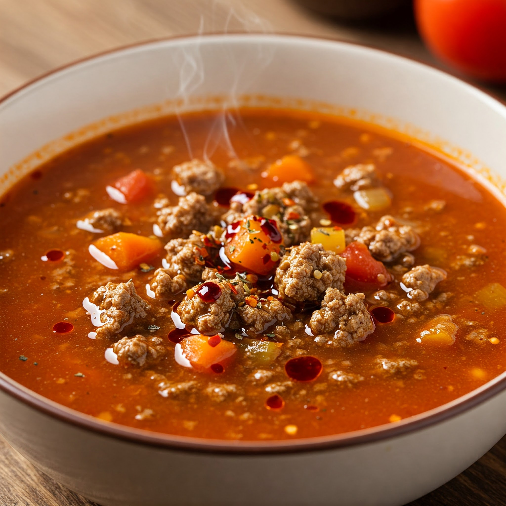

Spicy Hamburger Soup
Home

Spicy Hamburger Soup
Spicy hamburger soup is a hearty, rich, and flavorful soup made with ground beef, potatoes, and veggies in a spicy tomato beef broth.
This soup is an easy one-pot meal that is great for emptying the produce bin. The best thing about soup is that you don't have to
follow the recipe exactly. You can add whatever vegetables you like and leave out any vegetables that you don't like. Personally, I add carrots,
potatoes and onions because that's what my family will eat!
Ingredients
- 1 pound ground beef
- 1 Tbsp olive oil
- 1 onion, chopped
- 3 ribs celery, chopped
- 3 cloves garlic, minced
- 3 carrots, chopped
- 4 medium potatoes, cut into bite-sized pieces
- 4 cups beef broth
- 8 oz tomato sauce
- 1 tsp pepper
- 2 tsp chili powder
- 1/2 tsp cayenne pepper (optional)
- 1 tsp salt (more or less to taste)
Instructions
- Add oil to a large pot on medium-high.
- Add onions and celery. Cook until softened 3-5 minutes.
- Add carrots and garlic. Stir for 1 minutes.
- Add ground beef, cook until meat is brown.
- Add chili powder, cayenne pepper, black pepper, and salt. Stir well. Cook 1 minute, until fragrant.
- Add beef broth and tomato sauce.
- Add the potatoes and bring to a boil.
- Reduce heat to medium-low and cook uncovered until potatoes are fork-tender. 20-30 minutes.